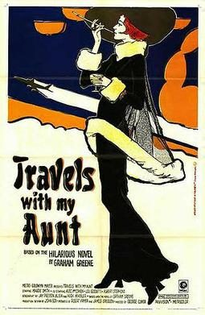

Travels With My Aunt
Studio: Metro-Goldwyn-Mayer
Starring: Alec McCowen, Louis Gossett Jr., Robert Stephens
Director: George Cukor
Writer: Jay Presson Allen, Hugh Wheeler
Producer: George Cukor
Travels with My Aunt is a 1972 American comedy film directed by George Cukor, written by Jay Presson Allen and Hugh Wheeler, and starring Maggie Smith. The film is loosely based on the 1969 novel of the same name by Graham Greene.
Trivia
- Won the Academy Award for Best Costume Design.
- Also nominated for: Academy Award for Best Actress; Academy Award for Best Cinematography; Academy Award for Best Production Design.
- George Cukor initially gave Katharine Hepburn a copy of the Graham Greene novel and told her he wanted to cast her as Augusta.
- Upon first reading the book, basically a collection of anecdotes, she felt it could not be adapted into a viable screenplay, but after reading it several more times she agreed to make the film.
- After working on it for months, Hepburn submitted it to Metro-Goldwyn-Mayer, but studio head James T. Aubrey Jr. felt it was missing the charm of the book.
Filming Locations
- Almería
- The film was shot on location in England, France, Italy, Morocco, Spain, Turkey and Yugoslavia, with the final scenes shot at Cabo de Gata natural park and Los Genoveses Beach.
Previous Showings
1 Run • 1 Festival
All runs on record (1):
- April 27 - 30, 1999Directed by George Cukorw/ Love Among the Ruins